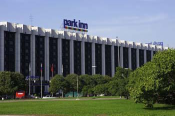
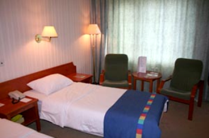
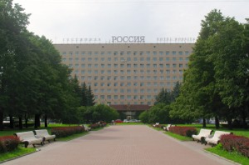
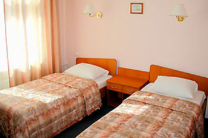
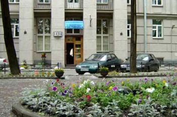
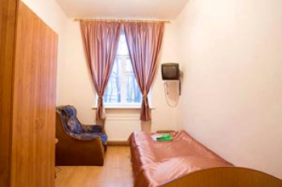

|
|  |  |
Rossiya 3***
Address: Saint-Petersburg, Chernyshevskogo Square, 11
Rossiya hotel has been constructed in 1962 in two steps away from the Moskovsky Avenue and perfectly entered in ensemble of the Chernyshevskogo Square. A picturesque Park Pobedy - a fine place for walks and rest - is located near the hotel.
In rooms: minibar; safe; color TV; phone with the international and long-distance communication lines. Convenient furniture, creating coziness and home atmosphere.
|  |  |
U Fontana 3***
Address: Saint-Petersburg, Sevastyanova str., 14
U Fontana hotel is located near to one of the most beautiful parks of Saint-Petersburg - Moscovsky Park Pobedy. On its territory, buried in verdure, there are attractions, cozy cafes, set of the ponds linked with each other by picturesque channels. Near hotel there is a square with a fountain. A Park Pobedy metro station is in ten minutes walking distance from hotel (it is possible to go under the Moskovsky Avenue or directly through park) - a direct line to the Nevsky Prospect (time of trip is about 15 minutes).
In rooms: Upholstered furniture; TV; phone; table; case.
|  |  |
| Hotel | Room category | Price, RUB |
|---|---|---|
| Park Inn Pulkovskaya (****) (the MSC 2009 venue) | Single standard | 5200 |
| Double standard | 5800 | |
| U Fontana (***) | Single standard | 2500 |
| Single standard | 2750 | |
| Double standard | 3000 | |
| Double standard | 3125 | |
| Junior suit | 4375 | Rossiya (***) | Single | 4300 |
| Double "C" | 4500 | |
| Double "B" | 5200 | |
| Junior suite | 6400 |
The prices include breakfast (with the exception U Fontana hotel), VAT, reservation services. Book accommodation here .
PLEASE NOTE:– The deadline for accommodation booking is May 14, 2009. After this date the Service Agency may alter reservations in case the preferable hotel is no longer available.
– The period of guaranteed reservation is July 7-11, 2009.
– The whole period of your stay in the hotel should be fully paid in advance before May 18, 2009 in order to guarantee accommodation.
– The hotel reservation will be confirmed only after receiving the payment.
CANCELLATION POLICY:
- Information about the hotel accommodation cancellation should be made in written form and forwarded to the MSC 2009 Service Agency Monomax by e-mail: Polina.Lyalina@monomax.org.
– For cancellations received before and on May 18, 2009 the payment will be refunded (minus banking costs).
– If cancellation is made after May 18, 2009 (or no show), the cost of one night staying and banking costs will be charged. The rest of the payment will be refunded.
Should you have any questions, please contact the coordinator, Ms. Polina Lyalina, tel.: +7 (812) 335 20 55 ext. 202,
VISA SUPPORT INFORMATION
Citizens of most countries have to obtain a visa to enter the Russian Federation. Participants are responsible for completing all legal formalities regarding their visa prior to entering the Russian Federation.
VISA REQUIREMENTS: GENERAL INFORMATIONTo obtain Russian entry visa a person needs to apply for visa in his/her home country. Given the nature of the meeting, a TOURIST visa is recommended for all participants who need a visa. Service Agency Monomax will provide all participants with a Visa Support Letter (voucher) and confirmation of the hotel reservation. These documents are required for formal visa application at a Russian Consulate or Embassy.
The visa application procedures and fees may vary across different countries. Please read the instructions carefully before submitting an application. In most countries two passport photos, proof of purchase of a personal travel/health insurance and the details of return air ticket may be required at the time of application.
Your travel passport must be valid for at least 3 months after the dates of your visit.
We advise you to contact the Consulate to enquire if they need anything else. Please contact the Russian consulate in your country to confirm whether a fax copy of the Visa Support Letter (electronic pdf- document) is acceptable for the application, or original documents are required. If the originals are required, Service Agency Monomax will send you the visa support documents by express mail (a fee will be charged for this service).
| Visa invitation type | Price, RUR | Comments |
|---|---|---|
| Tourist | 400 | Fax copy |
| Tourist (original tourist visa voucher + express mail expenses) | 3000 | Period of delivery: 3-4 days |
| Business (original business visa invitation + express mail expenses) | 4500 | Period of delivery: 45 days |
A TOURIST Visa Support Letter is provided for the dates of the Conference, but no more than for 15 days. A Tourist Visa will allow participants to attend the main Conference events, including pre- or post Conference tours and holidays.
If you need a BUSINESS Visa, please send the request to Ms. Polina Lyalina. Deadline to make the request for Business Visa Support Letter is May 20, 2009.
REQUESTING A TOURIST VISA SUPPORT LETTER
Use the online registration (Visa Support section) to submit a request for a TOURIST Visa Support Letter. This request should be filled in at the time of your hotel reservation.
Visa support documents will be issued based on the personal information submitted by each participant and accompanying person during the registration.
Please check the information is correct to avoid errors. Please note that Service Agency will issue the tourist visa invitation ONLY after getting the hotel accommodation payment.
Important notice: Make sure that all information shown in the invitation is correct immediately upon receipt. Contact Monomax manager should you find any mistake.
Participants who decide to make their own travel arrangements (e.g., those who have made their own hotel reservation) still need a Tourist Visa Support Letter. Please, ask in the hotel. In case of any problems please send the copy of hotel confirmation by email to Polina.Lyalina@monomax.org to be provided with visa support.
According to the Russian laws, participants, who plan to stay at friends, should be provided with private invition by their friends.
FILLING IN YOUR VISA APPLICATION FORM ONLINE OR AT THE RUSSIAN CONSULATE
1. Formal invitation sender (organization): Monomax PCO.
2. MFA reference number of Monomax: 0841, Address: room #25, accom.2, 35a, Bykova str., Pavlovo, Vsevolozhsky district, Leningradsky region, 188680 Russia. Major Office Address: 2, Sestroretskaya str., St. Petersburg 197183 Russia. Tel: +7 812 335-2055
3. Reason for visit to Russia: TOURISM
Please do not indicate any other purpose of visit as you are applying for a TOURIST Visa.
4. Russian department or organisation to be visited: NO ORGANISATIONS TO BE VISITED
5. Name and reference number of the tourist group: Individual trip
6. Hotel: please indicate the hotel name that is provided in the Tourist Visa Voucher from Monomax.
If you have already applied for a previous tourist visa, we remind you that tourist visa cannot be extended. You must apply for a new one.
Please, be advised that in order to obtain the visa, your passport must be valid for at least 3 months after the proposed departure date.
Do not hesitate to contact Monomax manager if you have any queries when filling in your form.
MIGRATION CARD
All foreign citizens arriving in Russia have to complete a migration card while passing through customs. Migration card will be given to foreigners before crossing the boarder (in airplane, train etc). Please, fill in it carefully and keep safe until you leave the country.
REGISTRATION UPON ARRIVAL IN THE RUSSIAN FEDERATION
Russian law requires foreign citizens staying more than 3 days on the territory of Russian Federation to register within first 3 working days from crossing the border. Your hotel takes all responsibilities for the registration. A fee of RUR 150 per person is charge for the period of stay. This amount is to be paid by the guest directly at the hotel Reception desk upon arrival. You are liable to an additional fee of RUR 150 if you extend your stay at the hotel, beyond the period you have indicated during your registration online.
If you have any questions or need our assistance please do not hesitate to contact us at Polina.Lyalina@monomax.org, tel.: +7 (812) 335 20 55 ext. 202. Please, do not forget to provide your login ID number in all correspondence.
Submit the request for Visa Support Letter here.